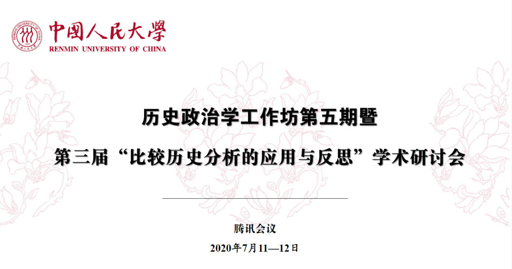

会议纪要（二）：以历史政治学为中心重建政治学原理体系（续）
收录于合集
2020年7月11日—12日，中国人民大学历史政治学研究中心成功举办历史政治学工作坊第五期暨第三届“比较历史分析的应用与反思”学术研讨会，与会专家学者就重塑社会科学的历史想象力进行了深入探讨。政文观止Poliview在7月20日曾推出会议主旨演讲和主题论坛环节的纪要（会议纪要（一）：以历史政治学为中心重建政治学原理体系），本期推出论文研讨环节的纪要，以飨读者。

论文研讨的第一部分由上海交通大学国际与公共事务学院黄宗昊讲师主持。同时黄老师也兼任评论人，另一位评论人是上海交通大学国际与公共事务学院刘宏松教授。
复旦大学国际关系与公共事务学院朱杰进副教授汇报的论文是《中国参与国际制度改革路径选择：渐进制度变迁的理论视角》。面对美国主导的国际制度，为什么中国采取了不同类型的改革路径？朱老师认为，霸权国的制度否决能力与既有国际制度的弹性空间是影响崛起国选择制度改革路径的两大条件要素。他以此解释了2008年以来中国在主权信用评级、国际货币体系、区域贸易协定和多边开发银行四个议题领域所采取的不同的制度改革路径，这些路径只有在崛起国的物质性权力不断增强的条件下才能实现。评论人刘宏松老师认为，论文可以对改革过程中的成本—收益进行更加细致的讨论。同时，美国的否决能力并非一成不变，能力的构成和影响值得进一步探讨。
安徽大学社会与政治学院刘城晨讲师汇报了他与外交学院硕士生王乐瞳合作的研究《比较优势、制度互补性与RCEP的形成》。刘老师以“区域全面经济伙伴关系协定”（Regional Comprehensive Economic Partnership，简称RCEP） 的进展和亚太地区区域经济合作制度的富集现象为研究背景，提出的问题是RCEP 为何能在国际制度众多的亚太区域得以形成。刘老师借鉴了比较政治经济学有关比较制度优势的研究，建立起国际制度中的比较制度优势理论。该理论涵盖制度特征、制度环境与施动者三个要素，包含比较优势与制度互补性两种机制，两种机制共同增强了参与国建设RCEP的意愿，加速了RCEP的发展进程。评论人刘宏松老师认为，通过比较制度优势理论来探讨RCEP形成的视角较为独特，但是对既有理论的总结应当更加准确，理论框架需要进一步澄清，例如对制度质量讨论。
外交学院国际关系研究所王思丹讲师汇报了《中国气候治理的领导转型：去中心化、部门化和国际化》一文。中国气候治理的领导力如何转型？现有研究广泛关注全球气候领导力的分化，关注发达国家、发展中国家、小岛国家等国家行为体的领导力，但很少有研究关注次国家的领导力变化。以国家转型理论的视角来看，中国气候治理的领导力体现了垂直去中心化、功能上的部门化/碎片化、多样国际化的特征，气候治理的转型过程并没有削弱反而增强了中国气候治理的领导力。黄宗昊老师在肯定王老师的论文之后，分别从国家转型的概念、领导力的表现、数据来源和因果关系等方面提出了建议。
论文研讨的第二部分由上海交通大学国际与公共事务学院黄宗昊讲师主持。两位评论人分别是云南大学民族政治研究院郭台辉教授和北京大学政府管理学院罗祎楠助理教授。
中央民族大学民族学与社会学学院郑文换副教授汇报的主题是《社会治理的理论转型：从国家理性到关系过程》。郑老师聚焦于工业社会向风险社会转型的现实背景，讨论社会治理的理论转型——从国家理性走向关系过程。她关注国家理性和关系过程的概念范畴，围绕组织层面和人观层面展开具体论述，探讨二者兼容和相融的可能进路。评论人郭台辉老师肯定了论文的选题意义，认为其经典且前沿，但他指出论文需进一步将理论与现实结合起来：第一，组织和人观层面难以经得起现实检验，二者在现实中本身就需要结合；第二，民族国家在当代依然具有重要作用，社会组织具有其局限性。
深圳大学城市治理研究院袁超助理教授的发言主题是《“技术利维坦”的傲慢与偏见》。袁老师以三段影片导入，试图说明技术对于现代性的深刻影响。技术在参与定义了现代性的同时，“技术进化”垄断了现代性。袁老师结合自己的实际经历，穿插健康码、排队式点赞、线上教学等具体事例，解释了“技术利维坦”的傲慢与偏见。技术的权力惯性体现了难以掩饰的“傲慢”，权力的技术逻辑体现了被传染的“偏见”，最终致使权力超出其有限性。评论人郭台辉老师认为，技术话题既新潮又永恒，社会群体对技术的对抗需要较大的成本。他从技术控制的历史分析、聚焦具体案例以解释现代国家的社会监控、国家内部不同单位间的比较等方面提出了论文完善的建议。
吉林大学行政学院博士生吴健青汇报了《比较化、历史化与议题化——理性选择制度主义与历史制度主义的耦合分析》一文。她认为新制度主义政治学中的理性选择制度主义与历史制度主义是具有代表性的两大基础流派，各自代表了研究的微观视角与宏观视野，在相互对立中有所交叉和联系，并相互整合和相互借鉴，在比较方法的普遍应用、历史分析的材料佐证、议题主导的理论趋势三个层面彰显了耦合性。二者的耦合的趋势有待进一步强化，从而共同推动观念转向与认知转向。评论人罗祎楠老师肯定了该研究所做的大量工作，但他认为需要进一步明确问题意识，思考论文的学术贡献。他认为理性选择制度主义与历史制度主义虽然存在相似性，但二者最大的不同在于各自所体现的世界观。
论文研讨的第三部分由中国人民大学国际关系学院讲师、历史政治学研究中心秘书长黄晨博士主持。两位评论人分别是美国哈佛大学政府系王裕华副教授和浙江大学社会学系郦菁副教授。
黄晨老师汇报了他与中国人民大学国际关系学院博士生杨端程合作的《国家兴衰的精英基础——精英吸纳、精英网络与魏蜀吴三国国家构建的不同命运》一文。黄晨老师指出，现有的国家构建研究尚未真正解释中观和微观层面，重描述、轻实证测量，多元路径刚刚起步。即便社科学界已基本赞同精英官僚制是国家构建和国家能力的核心要件，但理论层面的解释与精英的实际作用并不相符。对此，黄老师以汉末三国为例，考察精英这一次级变量对国家构建的影响机制。通过以自建的880名汉末三国时期的政治精英数据库为依托，结合定性分析、描述性统计与社会网络分析方法，研究发现，国家构建中精英吸纳和精英网络的差异影响了国家能力的分化乃至整个国家的兴衰走向。
中国社会科学院政治学研究所陈宇慧助理研究员汇报的论文是《塑造新政统：乾隆朝宫廷凯宴图的政治学新解》。陈老师将艺术史与政治史的研究相结合，探讨乾隆时期的宫廷凯宴图所体现的国家建构逻辑。以凯宴图为研究对象，是因为战争不仅是国家战略的重要组成部分，也是清帝国国家建构的重要抓手，是战争与军礼中唯一能体现皇帝存在的场合。结合相关史料，陈老师比较分析了图像的画面内容、构图、制作过程、衍生作品、传播范围、装饰功能、所附题跋等因素，讨论了乾隆所力图塑造的新大一统理念及其背后的政治意志和逻辑。
华东政法大学政治学与公共管理学院张佳威助理研究员的发言主题是《财政—军事主义视阈下的近代中国国家转型研究》。从近代以来主导中国国家政治方向的权势开始旁落于“地方”这一变化出发，张老师提出了研究问题——为何最终完成国家疆域统一的地域性政权兴起于两广地区？以比较历史分析为研究方法，张老师将1912—1926年间的京津、江浙以及两广地区作为比较的案例。通过围绕“关键节点”展开对案例的前置结构和竞争结果的讨论，研究发现了在战争情境下军绅政权（京津和江浙地区）和党治政权（两广地区）两种不同的因果影响机制，后者最终在权力竞争中占据优势。
评议人王裕华老师认为，黄晨老师和合作者的文章，以及张佳威老师的文章都关注分裂时期的国家建构，体现出作者强烈的理论意识。对于黄晨老师汇报的论文，王老师建议对三国君主统一的意愿，作为国家能力重要基础的经济变量做进一步的讨论，以排除竞争性解释。对于张佳威老师的论文，王老师有两点建议：一是突出全文的研究问题，在目前的研究中，强调区域性因素的问题与强调政权性因素的回答并不完全一致；二是尽量不用关键节点这一词汇，因为目前对于关键节点的定义和判断标准还存在争议。
评议人郦菁老师认为，黄晨老师汇报的论文将研究时段放在了史料极其有限的魏晋时期，对历史的深入探索有助于扩展社会科学研究的空间。随后，郦老师对论文涉及的拉克曼的精英理论进行了细致讨论，并对论文的结论在古代历史中的适用范围提出疑问，同时建议论文使用政治集团的概念。郦老师赞同陈宇慧老师用图像做研究的策略。但是，新的材料能够带来哪些新的变量和信息？论文可以将凯宴图与当时政治现实的差异进行比对，以及将官方意识的传播纳入讨论。对于张佳威老师的论文，郦老师建议从中心—边缘关系的角度来理解北伐从两广地区发起的原因。同时，论文需要进一步讲清楚不同的历史因素如何在特定的关键节点发生作用。
论文研讨的第四部分由中国人民大学国际关系学院博士生何家丞主持。两位评论人分别是上海交通大学国际与公共事务学院黄宗昊讲师和中国人民大学国际关系学院博士生释启鹏。
中国人民大学国际关系学院博士生张倩雨汇报了《新“资源诅咒”？移民汇款与腐败治理的关系研究》一文。伴随着跨国人口流动而发生的跨国资金流动，移民汇款日益成为重要的治理议题。移民汇款与国家腐败之间是何关系？既有研究关于移民汇款究竟加剧还是治愈腐败难以达成共识。基于世界银行2001—2012 年148个国家移民汇款的面板数据，研究检验了政体类型在移民汇款与腐败治理之间关系中可能存在的调节作用。
台湾大学政治学系博士生曹江涵发言的主题是《颜色包装下的民主：美国民主危机的阶级属性》。以美国最近走向扩大与失控的反种族歧视抗议运动为背景，研究尝试讨论美国民主危机的实质以及形成的真实原因。对于民主危机原因的讨论，西方学者通常将原因理解为是由内部制度运行与外部世界威胁两方面造成。但是，在“颜色”（肤色、社会符号）的包装之下，美国政治的阶级属性被掩盖了。虽然这种策略在一定时段内消解了阶级对抗，但在当前正面临着“旧疾”与“新症”并存的考验。
黄宗昊老师对张倩雨的论文进行了点评。他认为可以将讨论较多的政体类型纳入标题，在文中细化政体类型的所产生的不同影响；在论证中，从模型构建到统计验证的过程需要进一步精确化，同时界定研究的时间范围。释启鹏博士对曹江涵的论文进行了点评。他认为，该研究可以在三个方面进行完善：第一，明确理论对话的文献；第二，进一步说明论文的理论优势；第三，阐述经济精英与阶级话语之间的关联。
论文研究结束后，主持人何家丞对会议进行了简要总结。本次会议历时两天，主旨演讲和主题论坛围绕历史取向的社会科学研究进行了深入讨论，与会者看到了历史政治学对于推动未来中国政治学发展的巨大潜力。在论文研讨环节，各位学者对重塑社会科学的历史想象力进行了多领域、多层次的努力和对话。我们正在形成一个具有生命力的学术共同体，能够在未来积累更加丰富的成果。最后，他对各位老师和同学对历史政治学和比较历史分析系列活动的支持表示感谢。
撰文：何相冬 审读：何家丞 编辑：郭静远
【政文观止Poliview】系头条号签约作者